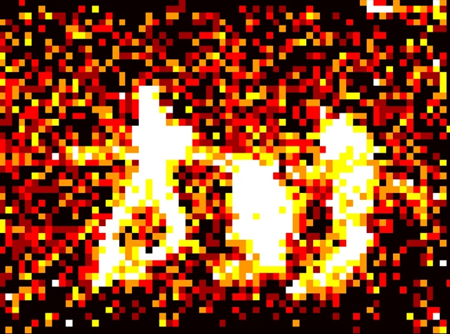
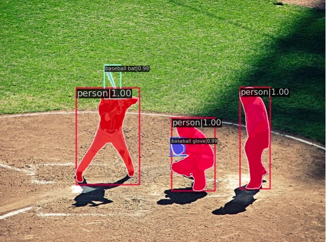
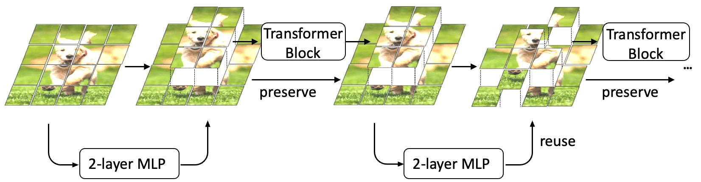
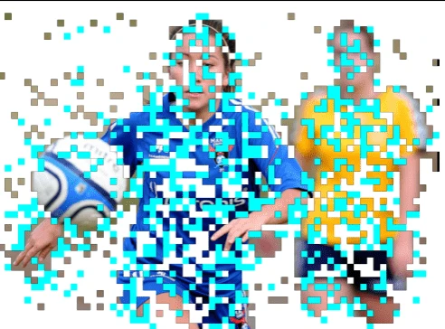
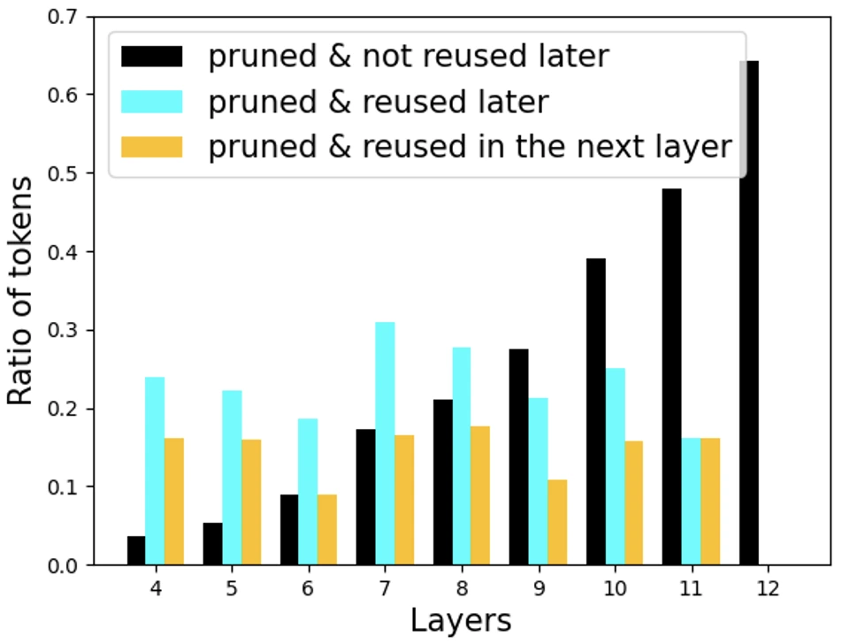
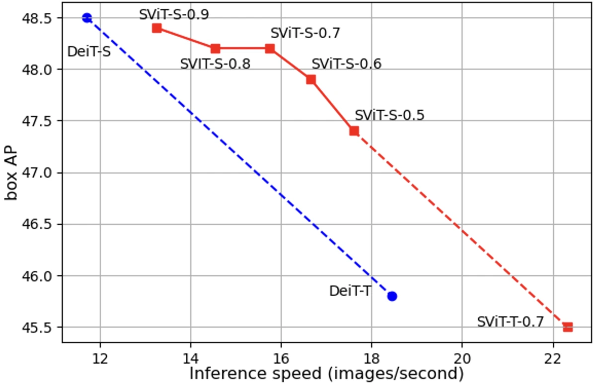

Preserve
Keep pruned tokens in the feature map so the detection head can still use them.
WACV 2024 University of Zurich
Robotics and Perception Group, University of Zurich


Computation follows the objects, down to their contours. Token usage counts the Transformer layers that process each token, not a binary keep/drop mask.
Published visualizations: Figures 1 & 4. Each row shows the same complete scene.
34%
Faster whole-network inference
46%
Faster backbone inference
0.3 AP
Drop in both box and mask AP
Reported gains for SViT-S vs. dense DeiT-S in ViT-Adapter + Mask R-CNN. COCO 2017; NVIDIA A100; batch size 1.
The method
Dense prediction needs a feature at every location. Instead of discarding pruned tokens, SViT preserves their features and lets later layers reactivate them.

Keep pruned tokens in the feature map so the detection head can still use them.
A token skipped by one block can return in a later block, recovering useful detail.
Allocate more tokens to complex images and fewer to simple images.
A lightweight, two-layer MLP is sufficient to make the selection.
Pruning does not have to be permanent. SViT can reactivate previously skipped tokens when later layers need them.

Actual model visualizations from Figure 5b. These are distinct from the cumulative token-usage heatmaps above.

Many tokens pruned in early layers are reused later. More than half of reactivated tokens are reused in the immediately succeeding layer. Section 4.3
SViT-S retains 48.2 box AP and 42.5 mask AP, while improving whole-network throughput from 11.70 to 15.75 images per second.
| Backbone | Box AP ↑ | Mask AP ↑ | Network FPS ↑ | Backbone FPS ↑ |
|---|---|---|---|---|
| DeiT dense | 48.5 | 42.8 | 11.70 | 14.20 |
| EViT | 47.1 | 41.6 | 15.34 | 20.01 |
| EvoViT | 47.2 | 41.6 | 15.48 | 20.26 |
| ATS | 46.7 | 41.1 | 11.63 | 14.24 |
| DynamicViT | Training did not converge | |||
| DynamicViT + preserve | 47.2 | 41.6 | 15.66 | 20.79 |
| SViT ours | 48.2 | 42.5 | 15.75 | 20.78 |
Source: Table 5. Single NVIDIA A100, batch size 1. FPS is measured throughput, not FLOPs or an estimated speedup.

SViT consistently improves the speed-accuracy trade-off in these experiments. More aggressive pruning still reduces accuracy, especially when very few tokens remain in the last blocks.
This study focuses on isotropic ViT backbones for object detection and instance segmentation, not pyramidal transformers.
Open research
@InProceedings{Liu_2024_WACV,
author = {Liu, Yifei and Gehrig, Mathias and Messikommer, Nico and Cannici, Marco and Scaramuzza, Davide},
title = {Revisiting Token Pruning for Object Detection and Instance Segmentation},
booktitle = {Proceedings of the IEEE/CVF Winter Conference on Applications of Computer Vision (WACV)},
month = {January},
year = {2024},
pages = {2658-2668}
}